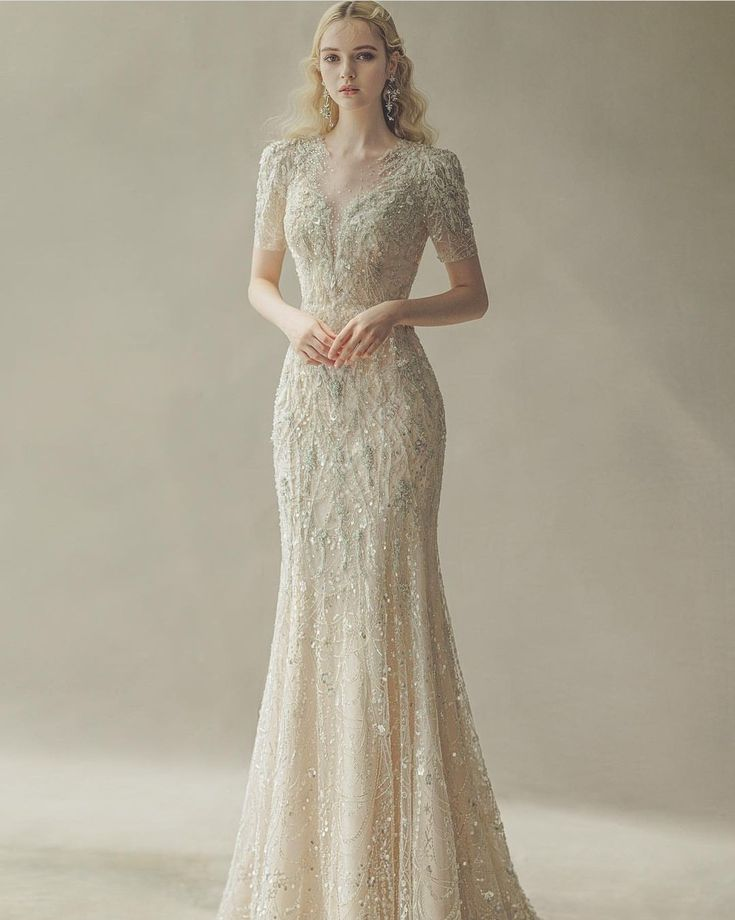
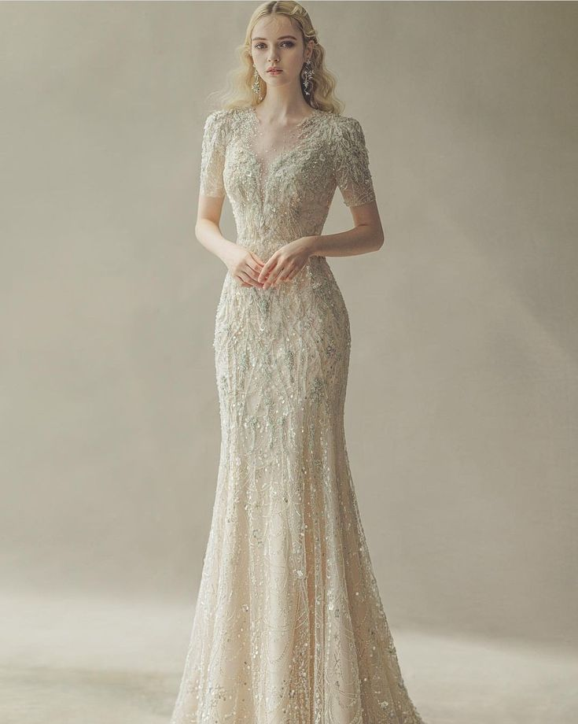
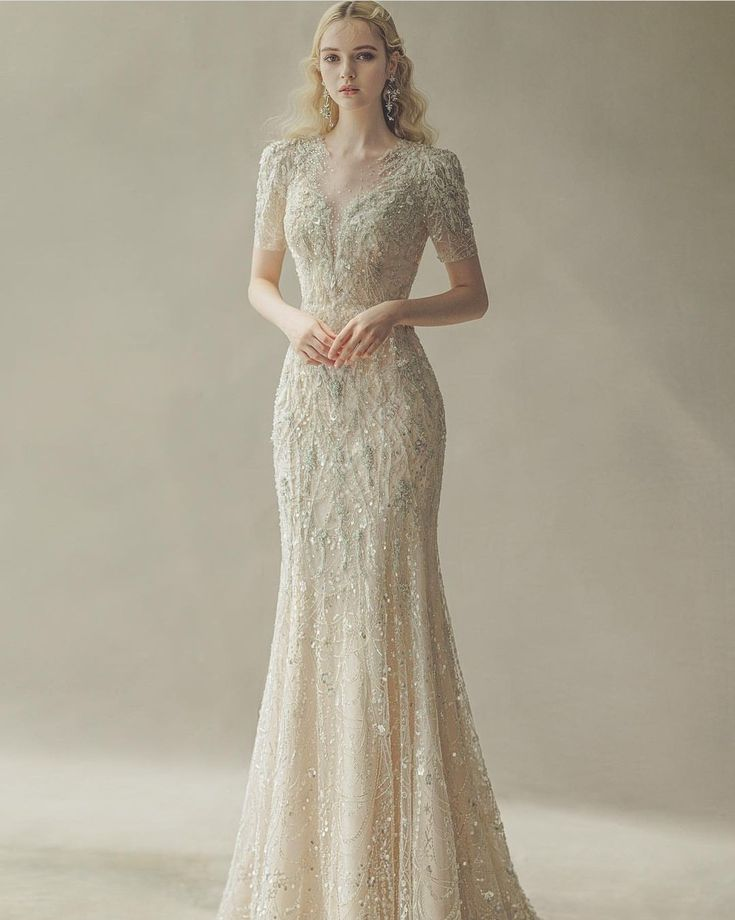

Discover timeless elegance tailored to your style, where every detail celebrates your perfect fit. Let us guide you to the outfit that makes your special day truly unforgettable.

Gaun A-Line
Gaun A-line adalah salah satu gaya gaun pengantin yang paling populer. Ciri khasnya adalah potongan yang melebar di bagian bawah, mirip huruf "A," yang memberikan tampilan elegan dan menawan. Gaun A-Line dikenal elegan, sederhana, dan cocok untuk berbagai bentuk tubuh.
Kelebihan : Membentuk siluet tubuh yang proporsional, Cocok untuk hampir semua bentuk tubuh terutama yang ingin menyamarkan area pinggul atau paha, Memberikan kebebasan bergerak karena tidak ketat di bagian bawah.
Cocok untuk : Semua tipe tubuh, termasuk tubuh pear (pinggul lebih besar daripada bagian atas).
Pemilihan warna gaun A-Line bisa disesuaikan untuk menonjolkan keindahan warna kulit:
Kulit Cerah/Pucat : Warna lembut seperti pastel (baby pink, lavender, mint) atau netral (ivory, putih tulang). Warna kontras seperti merah tua, navy, atau hijau zamrud untuk memberikan kesan hidup.
Kulit Sawo Matang : Warna hangat seperti cokelat keemasan, peach, oranye tua, terracotta, dan burgundy. Warna netral seperti krem, nude, dan olive green.
Kulit Gelap : Warna cerah seperti putih bersih, kuning mustard, biru terang, atau fuchsia. Warna mewah seperti emas, perak, merah marun, atau ungu tua.
Gaun Mermaid
Gaun Mermaid adalah salah satu pilihan populer untuk pengantin yang ingin menonjolkan lekuk tubuh mereka. Ciri khas gaun ini adalah potongan yang ketat dari dada hingga lutut, lalu melebar seperti ekor ikan duyung, memberikan kesan anggun dan glamor.
Kelebihan : Menonjolkan lekuk tubuh dengan indah, memberikan tampilan elegan dan dramatis, cocok untuk acara formal seperti pernikahan.
Cocok untuk : Tubuh berbentuk jam pasir (pinggang ramping dengan proporsi bahu dan pinggul seimbang) karena potongannya akan menekankan lekuk alami tubuh.
Pemilihan warna gaun Mermaid bisa disesuaikan untuk menonjolkan keindahan warna kulit :
Kulit Cerah/Pucat : Warna pastel seperti blush pink, champagne, atau ivory. Warna dramatis seperti merah anggur dan navy juga cocok.
Kulit Sawo Matang : Warna hangat seperti emas, terracotta, cokelat tua, atau burgundy.
Kulit Gelap : Warna terang seperti putih bersih, kuning emas, atau biru safir. Warna elegan seperti ungu tua atau perak juga menambah kesan mewah.
Gaun Sheath
Gaun Sheath memiliki potongan lurus dari bahu hingga jatuh ke bawah tanpa banyak melebar. Desain ini memberikan tampilan minimalis, modern, dan cocok untuk pengantin yang menyukai kesan simpel namun elegan. Gaun sheath sering dipilih oleh pengantin atau pemakai yang ingin terlihat anggun dan ramping, terutama bagi mereka yang memiliki postur tubuh proporsional karena desain ini menonjolkan siluet tubuh.
Kelebihan: Memberikan ilusi tubuh lebih tinggi dan ramping karena potongannya yang lurus. Cocok untuk acara pernikahan indoor atau outdoor.
Cocok untuk: Tubuh ramping dan tinggi atau tubuh mungil, karena desainnya tidak menambah volume dan membantu menciptakan siluet yang lebih panjang.
Pemilihan warna gaun Sheath bisa disesuaikan untuk menonjolkan keindahan warna kulit :
Kulit Cerah/Pucat: Warna netral seperti ivory, abu-abu muda, atau blush pink. Tambahan aksen renda atau glitter akan memperkaya tampilan.
Kulit Sawo Matang: Warna natural seperti nude, olive green, peach, atau cokelat keemasan.
Kulit Gelap: Warna berani seperti putih bersih, merah menyala, biru royal, atau emas. Warna metalik seperti perak juga memberikan kesan modern.
Butik
Mencari butik untuk membuat jas dan gaun pernikahan yang tepat adalah langkah penting dalam memastikan tampilan anda sempurna pada hari spesial. Rekomendasi butik yang baik harus menawarkan layanan yang mencakup desain khusus, kualitas bahan yang baik, serta penjahit yang berpengalaman. Pastikan butik tersebut memiliki portofolio yang menunjukkan berbagai gaya dan desain gaun atau jas yang sesuai dengan selera anda. Selain itu, baca ulasan dari pelanggan sebelumnya dan cari tahu tentang reputasi butik untuk memastikan bahwa anda memilih tempat yang terpercaya dan memiliki pengalaman yang baik dalam mendukung pengantin.
Jangan sampai salah memilih butik. Perhatikan faktor seperti kualitas bahan, keahlian jahitan, dan kecocokan dengan gaya pribadi anda. Pastikan juga bahwa butik menawarkan sesi konsultasi yang memungkinkan anda untuk berdiskusi tentang detail desain dan menguji sampel sebelum memesan. Jangan ragu untuk bertanya tentang proses pembuatan, biaya tambahan, dan estimasi waktu selesai. Sebuah butik yang baik harus transparan dalam memberikan informasi ini agar anda merasa percaya diri dengan keputusan yang anda buat. Kami merekomendasikan beberapa butik terbaik yang wajib anda kunjungi dibawah ini :
Butik Populer
Elora Bridal - Jl. Mahakam No.8, Kebayoran Baru, Jakarta Selatan, 12150.
The Bridal Room - Jl. Kemang Raya No.27, Jakarta Selatan, 12730.
Dewi Saroja Bridal - Jl. Jend. Sudirman Kav. 72, SCBD, Jakarta Selatan, 12190.
Cocoon Bridal & Atelier - Jl. Lebak Bulus IV No.5, Jakarta Selatan, 12440.
Delapan Padi - Jl. Cipete Raya No. 19A, Jakarta Selatan, 12410.
Fay Diane Bridal & Couture - Sumber Endah 74, Bandung, Jawa Barat, 40222.
Yong Hana Makeupart - Jl. Riau No. 7, Bandung, Jawa Barat, 40111.
Elleonora Shindy - Jl. Mekar Indah No. 34, Bandung, Jawa Barat, 40114.
Crystal Clarissa - Jl. Sumur Bandung No. 16, Bandung, Jawa Barat, 40112.
Debby Hardinata - Jl. Merdeka No. 65, Bandung, Jawa Barat, 40111.
Wedding Island - Jl. Sersan Bajuri No. 11, Bandung, Jawa Barat, 40133.
R'Jayanti MakeUp & Wedding Gallery - Jl. Dipatiukur No. 9, Bandung, Jawa Barat, 40132.
Bright by Maria Damayanti - Jl. Sultan Agung No. 45, Bandung, Jawa Barat, 40124.
Delapan Padi - Jl. Cipaganti No. 71, Bandung, Jawa Barat, 40141.
Fay Diane Bridal & Couture - Sumber Endah 74, Bandung, Jawa Barat, 40222.
Alamat : Jl. Jendral Sudirman No.48, Jakarta Pusat, Indonesia
Pengetahuan
Ketahui lebih dalam tentang warna kulit, bentuk tubuh, serta kesehatan pengantin yang perlu dipertimbangkan sebelum pernikahan. Kami menyediakan informasi lengkap mengenai cara memilih gaun dan jas yang sesuai dengan warna kulit anda, tips merawat tubuh agar tetap bugar, serta pentingnya perjanjian pranikah untuk meminimalisir masalah di masa depan. Jelajahi topik-topik ini untuk membantu anda membuat keputusan yang bijak dan memastikan hari pernikahan anda berjalan sempurna.
Warna Kulit
Bentuk Tubuh
Perjanjian Pra Nikah
Kesehatan Pengantin
Warna Kulit
Memilih gaun dan jas pernikahan yang sesuai dengan warna kulit sangat penting untuk memastikan tampilan Anda tampak harmonis dan menawan di hari besar. Berikut adalah beberapa tips untuk memilih gaun dan jas yang paling cocok untuk berbagai warna kulit :
1. Warna Kulit Cerah :
Warna Putih Murni atau Gading : Cocok untuk pengantin dengan kulit cerah atau pucat. Warna-warna ini memberikan kontras yang cantik dan menonjolkan kecantikan alami kulit.
Pilih Gaun dengan Aksen Emas atau Perak : Warna-warna hangat seperti emas atau perak dapat menambah kilau pada kulit cerah Anda.
Hindari Warna Terlalu Banyak : Untuk kulit cerah, hindari warna yang terlalu terang atau kontras tinggi seperti biru tua atau merah marun, karena bisa tampak mencolok.
2. Warna Kulit Sawo Matang atau Cokelat :
Gaun dengan Warna Hangat : Pilih warna-warna hangat seperti merah anggur, marun, atau biru laut yang bisa meningkatkan kecerahan kulit.
Aksesoris Emas atau Tembaga : Warna-warna ini cocok untuk menonjolkan rona kulit sawo matang dan memberikan tampilan yang elegan.
Hindari Putih Murni : Cobalah nuansa gading atau krem untuk memberikan kontras yang lebih lembut.
3. Warna Kulit Gelap :
Warna Cerah atau Netral : Pilih gaun dengan warna cerah seperti ivory, champagne, atau nuansa peach untuk menciptakan keseimbangan yang indah.
Warna Lembut seperti Pastel : Warna pastel seperti lavender atau mint bisa memberikan sentuhan lembut yang menyenangkan.
Aksesoris Emas atau Perak : Aksesoris seperti kalung atau headpiece berwarna emas atau perak bisa menambahkan keanggunan dan kecerahan pada tampilan keseluruhan.
Tips :
Coba Beberapa Pilihan : Sebelum memutuskan, cobalah beberapa gaun atau jas di bawah pencahayaan yang berbeda untuk melihat bagaimana mereka cocok dengan warna kulit Anda.
Perhatikan Kontras : Pilih gaun atau jas yang memberikan kontras lembut dengan warna kulit, bukan yang terlalu kontras.
Eksperimen dengan Aksesori : Gunakan aksesori yang bisa menambah warna dan kilau pada tampilan Anda, seperti tiara emas atau anting-anting perak.
Dengan memperhatikan warna kulit Anda, Anda dapat menemukan gaun atau jas pernikahan yang tidak hanya sesuai, tetapi juga membuat Anda merasa percaya diri dan cantik pada hari spesial.
Bentuk Tubuh
Memilih gaun dan jas pernikahan yang tepat sangat dipengaruhi oleh bentuk tubuh calon pengantin. Setiap bentuk tubuh memiliki karakteristik yang perlu dipertimbangkan agar hasil akhir terlihat cantik dan proporsional. Berikut adalah panduan untuk memilih gaun atau jas pernikahan berdasarkan bentuk tubuh, serta berat badan ideal dan tinggi badan yang direkomendasikan :
1. Bentuk Tubuh Pir (Sedang) :
Ciri : Pinggul lebih lebar daripada bahu. Pinggang terlihat lebih kecil.
Tujuan : Fokus pada mengimbangi tubuh dengan menonjolkan bagian atas seperti bahu dan dada.
Gaun/Jas : Gaun A-line atau gaun dengan bahu terbuka dapat membantu menyeimbangkan tubuh. Hindari gaun yang terlalu ketat di bagian bawah. Jas model suit yang sedikit longgar di bagian pinggul bisa menjadi pilihan yang baik untuk bentuk tubuh pear. Jas ini membantu menciptakan keseimbangan visual antara bagian atas dan bawah tubuh tanpa menekankan perbedaan pinggul yang lebih lebar.
Berat Badan Ideal : 50-70 kg (tergantung tinggi badan)
Tinggi Badan Ideal : 155-175 cm
2. Bentuk Tubuh Apel (Berisi) :
Ciri : Lebih banyak berat badan terkumpul di bagian perut dan pinggang. Bahu dan pinggul kurang menonjol.
Tujuan : Mengalihkan perhatian dari perut dan menonjolkan bahu dan kaki.
Gaun/Jas : Pilihlah gaun A-line, gaun dengan potongan empire, atau gaun sheath yang tidak terlalu ketat di bagian perut, untuk menyeimbangkan tubuh. Pilihlah jas dengan potongan yang lebih longgar di bagian perut, seperti model suit atau tuxedo dengan struktur bahu untuk menambahkan volume di bagian atas tubuh dan menghindari penekanan pada area perut yang lebih lebar. Jas slim fit dapat mempertegas pinggul dan perut yang lebih lebar, jadi hindarilah jika tidak nyaman.
Berat Badan Ideal : 55-75 kg (tergantung tinggi badan)
Tinggi Badan Ideal : 160-175 cm
3. Bentuk Tubuh Segitiga Terbalik (Langsing):
Ciri : Bahu lebih lebar dibanding pinggul, kaki panjang dan ramping. Pinggul cenderung lebih sempit dibandingkan dengan bagian atas tubuh dan berat badan biasanya terkumpul di bagian atas tubuh.
Tujuan : Menyeimbangkan tubuh dengan mengalihkan perhatian dari bahu ke pinggul.
Gaun/Jas : Pilihlah gaun dengan detail pada bagian bawah seperti gaun mermaid atau gaun sheath yang menyeimbangkan bagian atas dan bawah tubuh. Jas double-breasted atau model suit dengan tali pinggang bisa membantu menambah volume di bagian bawah tubuh dan menyeimbangkan bahu yang lebih lebar. Jas slim fit juga cocok untuk menonjolkan bahu dan dada tanpa menekankan pinggul yang lebih kecil.
Berat Badan Ideal : 50-70 kg (tergantung tinggi badan)
Tinggi Badan Ideal : 160-180 cm
Tips :
Pilih Gaun yang Meningkatkan Kelebihan : Fokuskan pada bagian tubuh yang ingin ditonjolkan. Misalnya, jika ingin menonjolkan bahu, pilih gaun dengan lengan terbuka atau tali yang menarik perhatian ke bagian atas tubuh.
Perhatikan Kain : Pilih bahan yang cocok dengan bentuk tubuh anda. Bahan tebal seperti satin bisa memberi bentuk dan membantu menyamarkan kekurangan pada tubuh tertentu.
Percaya Diri: Pilih pakaian yang membuat anda merasa percaya diri dan nyaman. Semua bentuk tubuh itu cantik dan yang terpenting adalah anda merasa bahagia dengan pilihan anda.
Perjanjian Pra Nikah
Perjanjian pranikah adalah dokumen hukum yang penting untuk dipertimbangkan oleh para calon pengantin sebelum memasuki pernikahan. Tujuan utama dari perjanjian ini adalah untuk mencegah konflik besar di masa depan dengan menetapkan aturan dan kesepakatan yang jelas mengenai pembagian aset, tanggung jawab rumah tangga, dan pengelolaan keuangan. Bagi banyak pasangan, perjanjian pranikah juga bisa menjadi sarana untuk mendiskusikan harapan, tujuan, dan prioritas hidup bersama. Beberapa poin umum yang biasanya dimasukkan dalam perjanjian pranikah meliputi :
Pembagian Keuangan : Menyusun aturan jelas tentang pengelolaan uang, tabungan, investasi, dan utang.
Kepemilikan Aset : Menentukan bagaimana aset pribadi dan bersama akan dibagi jika terjadi perceraian atau kematian salah satu pihak.
Tanggung Jawab Rumah Tangga : Menyepakati siapa yang bertanggung jawab untuk urusan rumah tangga seperti memasak, membersihkan, merawat anak, serta berbagi tugas lainnya.
Perencanaan Masa Depan : Mendiskusikan rencana jangka panjang seperti karir, pendidikan anak, dan gaya hidup yang diinginkan bersama.
Warisan dan Hibah: Menyusun ketentuan tentang bagaimana warisan, hibah, atau perencanaan estate akan diatur, serta memastikan bahwa semua aset keluarga terkelola dengan baik jika terjadi sesuatu yang tidak diinginkan.
Hak Asuh Anak : Membicarakan bagaimana hak asuh anak akan diatur jika terjadi perceraian, termasuk kesepakatan tentang pendidikan, pola asuh, dan pemeliharaan.
Keputusan Medis : Menyepakati siapa yang bertanggung jawab dalam pengambilan keputusan medis jika salah satu pihak tidak mampu melakukannya.
Pengaturan tentang Aset Pribadi: Menentukan apakah ada aset pribadi yang tidak terlibat dalam perjanjian pernikahan.
Memiliki perjanjian pranikah yang jelas membantu para calon pengantin untuk meminimalkan risiko konflik, menghindari kesalahpahaman di kemudian hari, dan memastikan bahwa mereka memiliki visi yang sejalan tentang masa depan pernikahan mereka. Perjanjian ini tidak hanya melindungi hak-hak individu, tetapi juga memperkuat fondasi hubungan yang sehat dan harmonis.
Kesehatan Pengantin
Kesehatan pengantin adalah aspek yang sangat penting untuk dipersiapkan sebelum dan setelah pernikahan, karena mempengaruhi kualitas kehidupan pernikahan dan kesiapan untuk memulai keluarga di masa depan. Kesehatan pengantin mencakup berbagai hal mulai dari pola makan seimbang, olahraga teratur, manajemen stres, hingga pemeriksaan kesehatan rutin. Calon pengantin perlu memahami bahwa menjaga kesehatan adalah investasi jangka panjang yang membantu menjaga kebugaran tubuh, meningkatkan kesuburan, dan mengurangi risiko penyakit kronis. Nutrisi yang baik, termasuk makanan bergizi dengan porsi yang tepat, sangat penting untuk mendukung energi tubuh dan kesehatan secara keseluruhan. Beberapa poin penting yang harus diketahui oleh calon pengantin antara lain adalah :
Pola Makan Seimbang : Mengonsumsi makanan bergizi dengan porsi yang tepat untuk mendukung energi tubuh dan memperkuat sistem kekebalan. Menghindari makanan olahan, gula berlebih, dan fokus pada konsumsi sayuran, buah-buahan, protein sehat, dan biji-bijian.
Olahraga Teratur : Melakukan aktivitas fisik secara teratur untuk meningkatkan kebugaran, menjaga berat badan ideal, dan mengurangi risiko penyakit kronis seperti diabetes dan tekanan darah tinggi. Pilih jenis olahraga yang disukai agar lebih mudah konsisten melakukannya.
Manajemen Stres : Stres dapat berdampak negatif pada kesehatan fisik dan mental. Penting untuk mengelola stres dengan cara yang sehat seperti meditasi, olahraga, atau berbicara dengan orang yang dipercaya.
Pemeriksaan Kesehatan Rutin : Melakukan pemeriksaan kesehatan rutin seperti tes darah, cek tekanan darah, dan pemeriksaan gigi untuk mendeteksi masalah kesehatan sejak dini.
Kunjungan Ke Dokter Spesialis: Calon pengantin perlu berkonsultasi dengan dokter spesialis terkait kondisi kesehatan tertentu, seperti dokter kandungan atau ahli gizi, untuk mendapatkan saran yang lebih spesifik terkait rencana reproduksi dan kesehatan secara keseluruhan.
Cukup Istirahat : Tidur yang cukup sangat penting untuk menjaga kesehatan tubuh dan mental. Pastikan mendapatkan waktu tidur yang berkualitas setiap malam.
Hindari Kebiasaan Buruk: Menjauhi kebiasaan buruk seperti merokok, alkohol berlebih, dan narkoba yang dapat merusak kesehatan secara keseluruhan dan mempengaruhi kesuburan.
Pendidikan Reproduksi: Memahami siklus menstruasi, kesehatan reproduksi, dan perlindungan terhadap penyakit menular seksual dapat membantu calon pengantin untuk merencanakan kehamilan dengan lebih baik di masa depan.
Menjaga kesehatan sebelum pernikahan adalah investasi jangka panjang yang berkontribusi pada kebahagiaan pasangan dan memungkinkan mereka untuk menjalani kehidupan pernikahan dengan penuh vitalitas dan kesiapan untuk memulai keluarga.
Rekomendasi
Hasil Rekomendasi
Isi formulir di atas untuk mendapatkan saran gaun dan jas terbaik berdasarkan data Anda.
 
